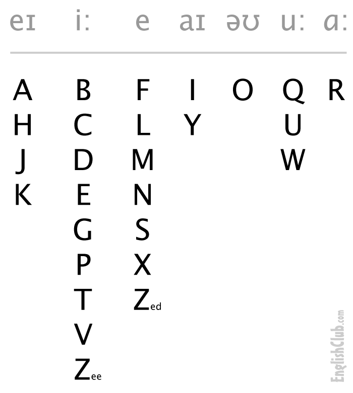
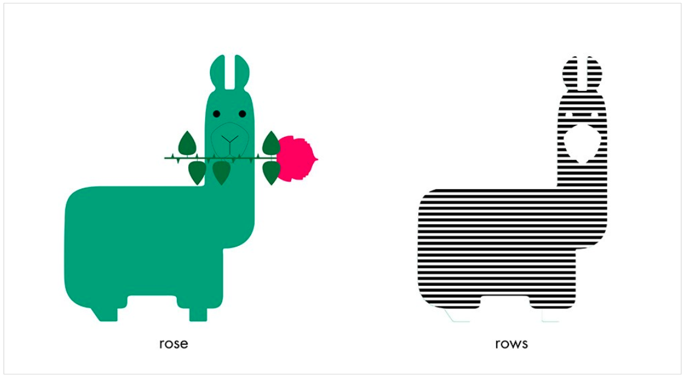
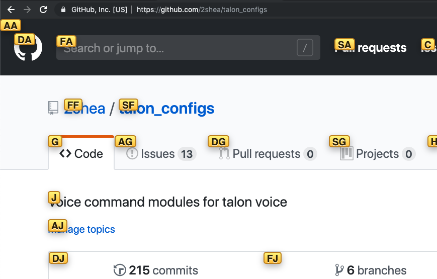
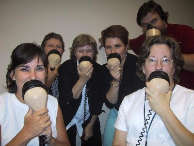
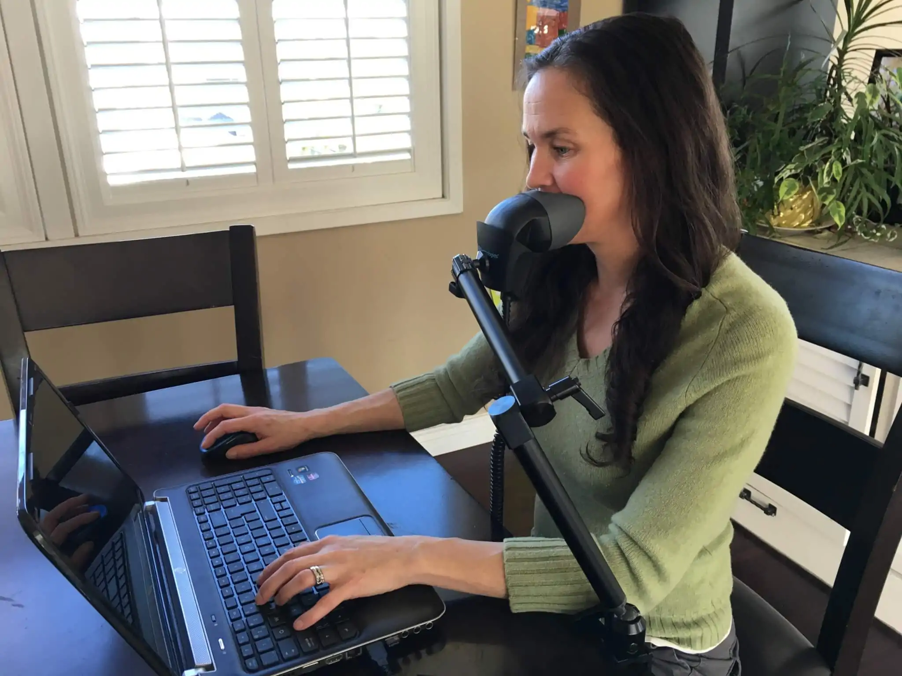

class: center, middle # Perl Out Loud ??? - introduction --- class: center, middle # But... Why?? --- class: middle # RSI (Repetitive Strain Injury) ??? pain felt in muscles, nerves, and tendons caused by repetitive movement and overuse. Started 2017 significantly impaired typing ability Both hands --- # First I tried... * Taking breaks * Wrist braces at night * Anti-inflammatories * Occupational/Physical Therapy * Acupuncture * Chiropractor * Pain creams * Yoga/Stretching --- class: center, middle # Ergonomics ??? Ergonomic review Tape pens to my hands Tape fingers together Standing desk --- background-image: url(keyboards.png) ??? Split keyboard mitosis keyboard --- background-image: url(sad-face.jpg) ??? * New keyboards only got me so far * Got frustrated feeling limited While taking four aleve a day, using a very specialized keyboard, adding a left-hand mouse, maintaining a stretching schedule, i could type ~3 hours a day with no more than ~30-45 straight minutes of typing, but broken up with long breaks in between. * Started looking at voice dictation --- # I was expecting writing perl by voice to go something like this... --- class: center, middle <iframe width="560" height="315" src="https://www.youtube-nocookie.com/embed/MzJ0CytAsec" frameborder="0" allow="accelerometer; autoplay; encrypted-media; gyroscope; picture-in-picture" allowfullscreen></iframe> --- # But it actually works like... --- class: center, middle <video width="100%" controls> <source src="videos/better_than_the_90s.mp4" type="video/mp4"> </video> --- # The Tech * Dragon Dictation * Talon * Microphone ??? - for mac - need decent microphone --- # What Is Talon? * Hands-free input (voice/noise command, eye tracking) * Uses Dragon Dictation API * Programmatically configured with Python * Free! * Ryan Hileman (the author) * New in 2018 ??? This talk is not about Talon... it's an example of how Talon can be used. All the commands and tools you will see are built on top of Talon's API. * Mention what dragon is * Also has a built-in voice engine --- # The ABC's **A**ir **B**at **C**ap **D**ip **E**ach **F**ine **G**one **H**arp **S**it **J**ury **C**runch **L**ook **M**ad **N**ear **O**dd **P**it **Q**uench **R**ed **S**un **T**rap **U**rge **V**est **W**hale **P**lex **Y**ank **Z**ip <input type="textarea" name="test"></input> ??? Each letter of the alphabet is a word. The alphabet words are carefully chosen to have few syllables (for speed), and carefully chosen phonemes* (for accuracy). --- class: middle <div> <table> <caption>NATO Phonetic Alphabet</caption> <tr><td> A </td><td> Alpha </td><td> N </td><td> November </td></tr> <tr><td> B </td><td> Bravo </td><td> O </td><td> Oscar </td></tr> <tr><td> C </td><td> Charlie </td><td> P </td><td> Papa </td></tr> <tr><td> D </td><td> Delta </td><td> Q </td><td> Québec </td></tr> <tr><td> E </td><td> Echo </td><td> R </td><td> Romeo </td></tr> <tr><td> F </td><td> Foxtrot </td><td> S </td><td> Sierra </td></tr> <tr><td> G </td><td> Golf </td><td> T </td><td> Tango </td></tr> <tr><td> H </td><td> Hotel </td><td> U </td><td> Uniform </td></tr> <tr><td> I </td><td> India </td><td> V </td><td> Victor </td></tr> <tr><td> J </td><td> Juliett </td><td> W </td><td> Whiskey </td></tr> <tr><td> K </td><td> Kilo </td><td> X </td><td> X -ray</td></tr> <tr><td> L </td><td> Lima </td><td> Y </td><td> Yankee </td></tr> <tr><td> M </td><td> Mike </td><td> Z </td><td> Zulu </td></tr> </table> </div> --- class: center, middle  --- # But what about all those symbols in perl? ### Actually, symbols are easy. <input type="textarea" name="test"></input> ??? - may be valid perl? --- # Alphabet, basic keys, and keyboard shortcuts will get you far. <input type="textarea" name="test"></input> ??? * ship option crunch -> * option each * option pit -> π * "command cap" -> cmd + C -> Copy * "command pit" -> cmd + P -> Paste tab - command, option, shift or ship For long or hard to remember combinations, I can configure commands in Talon --- # Homophones  <input style="text-align:center;" type="textarea" name="test"></input> ??? ### Same pronunciation, but different meaning, origin, or spelling * credit book for image Demo some homophones command shift left (select word behind cursor) --- # Repetition <input style="text-align:center;" type="textarea" name="test"></input> ??? - ordinals - demo simple repetition --- # Formatting <input style="text-align:center;" type="textarea" name="test"></input> ??? - kebab, snake, allcaps, pack --- # Custom Vocabulary <input style="text-align:center;" type="textarea" name="test"></input> ??? - upsert --- class: center, middle <video height="60%" controls> <source src="videos/speaking_perl_demo.mp4" type="video/mp4"> </video> --- # Browser  --- ??? - demo committing to git, push to github --- # Challenges * ramp up with limited typing ability is HARD * need to think ahead more before executing * poor accessibility; some things still require a mouse * voice strain * open office ??? ramp up: * async communication * zoom instead of lots of slack noise --- # Stenomask   --- # Acoustic Pods picture ??? Another solution for open office --- # Not so big Challenges * supporting specific programming languages ??? - language optimizations are nice to have, quality of life improvements but not necessarily required --- # Voice Dictation Friendly Code * Use abbreviations/acronyms thoughtfully * Don't try to save vowels * backspace not bkspc * shorter files are better ??? - use full words (don't make it about english only) --- Summary * Take care of your body! * Voice Dictation is surprisingly decent * Remember non-keyboard users when building things --- # Thanks! Links * Talon: https://talonvoice.com/ * personal Talon scripts: https://github.com/2shea/talon_configs * Talon community scripts: https://github.com/dwiel/talon_community